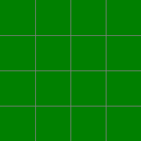
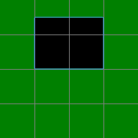
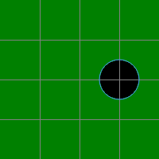
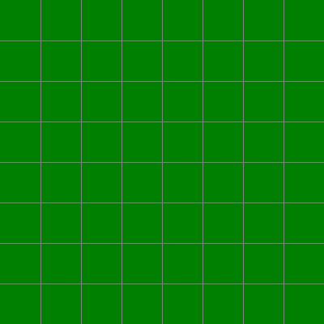
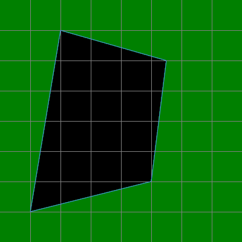
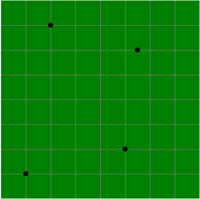
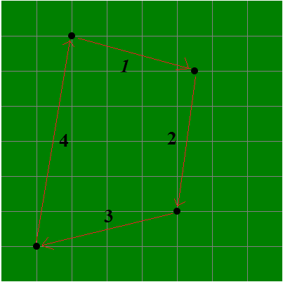
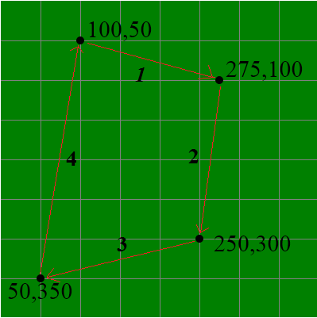

Thẻ <map> & <area> trong HTML
1) Giới thiệu "bản đồ ảnh"
- Bản đồ ảnh là một loại hình ảnh đặc biệt, trên tấm hình đó sẽ có các "vùng được xác định" và ta có thể nhấp vào các vùng đó.
- Ví dụ: Tấm hình bên dưới là một ví dụ minh họa về bản đồ ảnh, trên tấm hình đó có bốn vùng được xác định là: mắt trái, mắt phải, mũi, miệng (bạn hãy thử bấm vào các vùng đó để kiểm tra)
2) Nguyên lý tạo một bản đồ ảnh
- Để tạo một bản đồ ảnh thì chúng ta cần hai thành phần:
- Thứ nhất: Một tấm hình dùng để làm bản đồ ảnh.
- Thứ hai: Một bản đồ hệ thống tọa độ của các vùng.
<img src="../image/face.png" usemap="#mat-mui-mieng">
<map name="mat-mui-mieng">
<area shape="circle" coords="149,203,30" href="demo?file=2258">
<area shape="circle" coords="250,203,30" href="demo?file=2259">
<area shape="rect" coords="169,245,228,286" href="demo?file=2260">
<area shape="rect" coords="162,292,237,336" href="demo?file=2261">
</map>
=> GIẢI THÍCH VÍ DỤ TRÊN:
- Thẻ <img> chính là thành phần thứ nhất (tấm hình dùng để làm bản đồ ảnh)
- Phần tử <map> với các thẻ <area> là thành phần thứ hai (bản đồ hệ thống tọa độ của các vùng)
- Bản đồ hệ thống tọa độ của các vùng có tên là mat-mui-mieng
- Thẻ <img> sử dụng thuộc tính usemap để áp dụng hệ thống tọa độ của bản đồ mat-mui-mieng vào tấm hình, tạo thành một bản đồ ảnh.
3) Chức năng của thẻ <map> và thẻ <area> trong HTML
- Thẻ <map> dùng để xác định một bản đồ.
- Thẻ <map> có một thuộc tính duy nhất là thuộc tính name, nó dùng để xác định tên của bản đồ.
- Thẻ <area> dùng để xác định "một vùng" trong bản đồ.
- Thẻ <area> phải được đặt bên trong phần tử <map>.
- Thẻ <area> không có thẻ đóng.
- Ví dụ: Đoạn mã bên dưới dùng để tạo một bản đồ có tên là mat-mui-mieng, trong bản đồ đó có bốn vùng được xác định.
<map name="mat-mui-mieng">
<area shape="circle" coords="149,203,30">
<area shape="circle" coords="250,203,30">
<area shape="rect" coords="169,245,228,286">
<area shape="rect" coords="162,292,237,336">
</map>
4) Các thuộc tính của thẻ <area>
- Thẻ <area> có sáu thuộc tính mà chúng ta cần phải quan tâm.
- Dưới đây là bảng mô tả sơ lược về sáu thuộc tính đó:
| href | Xác định đường dẫn đến tài liệu mà bạn muốn khi người dùng nhấp vào vùng thì sẽ được chuyển đến tài liệu đó |
| target | Xác định nơi mà tài liệu liên kết của vùng sẽ được mở |
| download | Xác định việc khi người dùng bấm vào vùng có chứa liên kết thì tài liệu của liên kết đó sẽ tự động được tải về |
| title | Xác định một "tiêu đề" cho vùng, khi người dùng di chuyển chuột vào trong vùng thì tiêu đề sẽ được hiện lên. |
| shape | Xác định hình dạng của vùng |
| coords | Xác định một tập hợp các tọa độ của vùng (Các tọa độ này sẽ xác định nên vị trí của vùng) |
4.1) Thuộc tính href
- Thuộc tính href dùng để xác định đường dẫn đến tài liệu mà bạn muốn khi người dùng nhấp vào vùng thì sẽ được chuyển đến tài liệu đó.
- Lưu ý: "Đường dẫn đến tài liệu" có thể là đường dẫn tương đối hoặc đường dẫn tuyệt đối.
- Khi người dùng nhấp vào mắt trái thì sẽ được chuyển sang trang học HTML.
- Khi người dùng nhấp vào mắt phải thì sẽ được chuyển sang trang học CSS.
<map name="mat-mui-mieng">
<area shape="circle" coords="149,203,30" href="../html/default.html">
<area shape="circle" coords="250,203,30" href="http://webcoban.vn/css/default.html">
</map>
4.2) Thuộc tính target
- Thuộc tính target dùng để xác định nơi mà tài liệu liên kết của vùng sẽ được mở.
- Thuộc tính target có bốn giá trị cơ bản:
| _blank | Mở tài liệu trong một tab mới |
| _self | Mở tài liệu trong khung hiện tại |
| _parent | Mở tài liệu trong khung cha của khung hiện tại |
| _top | Mở tài liệu trong tab hiện tại |
<map name="mat-mui-mieng">
<area shape="circle" coords="149,203,30" href="demo?file=2258" target="_blank">
<area shape="circle" coords="250,203,30" href="demo?file=2259" target="_self">
<area shape="rect" coords="169,245,228,286" href="demo?file=2260" target="_parent">
<area shape="rect" coords="162,292,237,336" href="demo?file=2261" target="_top">
</map>
4.3) Thuộc tính download
- Thuộc tính download xác định việc khi người dùng bấm vào vùng có chứa liên kết thì tài liệu của liên kết đó sẽ tự động được tải về.
<map name="mat-mui-mieng">
<area shape="circle" coords="149,203,30" href="../image/left-eye.png" download>
<area shape="circle" coords="250,203,30" href="../image/right-eye.png" download>
<area shape="rect" coords="169,245,228,286" href="../image/nose.png" download>
<area shape="rect" coords="162,292,237,336" href="../image/mouth.png" download>
</map>
- Ta có thể thêm giá trị cho thuộc tính download để xác định tên của tập tin khi được lưu về máy tính.
<map name="mat-mui-mieng">
<area shape="circle" coords="149,203,30" href="../image/left-eye.png" download="con-mat-ben-trai">
<area shape="circle" coords="250,203,30" href="../image/right-eye.png" download="con-mat-ben-phai">
<area shape="rect" coords="169,245,228,286" href="../image/nose.png" download="cai-mui">
<area shape="rect" coords="162,292,237,336" href="../image/mouth.png" download="cai-mieng">
</map>
- Lưu ý: Ta không cần phải xác định phần đuôi của tập tin vì hệ thống sẽ tự động làm việc đó.
4.4) Thuộc tính title
- Thuộc tính title dùng để xác định một "tiêu đề" cho vùng, khi người dùng di chuyển chuột vào trong vùng thì tiêu đề sẽ được hiện lên.
<map name="mat-mui-mieng"> <area shape="circle" coords="149,203,30" title="CON MẮT BÊN TRÁI"> <area shape="circle" coords="250,203,30" title="CON MẮT BÊN PHẢI"> <area shape="rect" coords="169,245,228,286" title="CÁI MŨI"> <area shape="rect" coords="162,292,237,336" title="CÁI MIỆNG"> </map>
4.5) Thuộc tính shape
- Thuộc tính shape dùng để xác định hình dạng của vùng.
- Thuộc tính shape có bốn giá trị cơ bản:
| default | Hình dạng của vùng sẽ là toàn bộ tấm hình | |
| rect | Vùng sẽ có dạng hình chữ nhật (hoặc vuông) | |
| circle | Vùng sẽ có dạng hình tròn | |
| poly | Vùng sẽ có dạng hình đa giác |
4.6) Thuộc tính coords
- Thuộc tính coords dùng để xác định một tập hợp các tọa độ của vùng.
(Các tọa độ này sẽ xác định nên vị trí của vùng)
- Tùy vào hình dạng của vùng mà cách xác định tọa độ sẽ khác nhau.
Cách xác định giá trị của thuộc tính coords đối với vùng "hình chữ nhật"
- Đối với vùng hình chữ nhật (giá trị của thuộc tính shape là rect) thì giá trị của thuộc tính coords phải gồm bốn số: left, top, right, bottom
- Trong đó:
- left là khoảng cách từ cạnh bên trái của vùng cho đến cạnh bên trái của tấm hình.
- top là khoảng cách từ cạnh trên của vùng cho đến cạnh trên của tấm hình.
- right là khoảng cách từ cạnh bên phải của vùng cho đến cạnh bên trái của tấm hình.
- bottom là khoảng cách từ cạnh dưới của vùng cho đến cạnh trên của tấm hình.
- Lưu ý: Giá trị của các số đều được tính theo đơn vị pixel.
| - Tôi có một tấm hình với kích thước chiều rộng 200 pixel và chiều cao 200 pixel như bên dưới: | - Nếu thuộc tính coords có giá trị là 50, 25, 150, 100 thì ta sẽ xác định được một vùng màu đen như bên dưới: |
|  |  |
Cách xác định giá trị của thuộc tính coords đối với vùng "hình tròn"
- Đối với vùng hình tròn (giá trị của thuộc tính shape là circle) thì giá trị của thuộc tính coords phải gồm ba số: x, y, circle
- Trong đó:
- x & y dùng để xác định vị trí tâm của hình tròn.
- x xác định vị trí từ tâm hình tròn đến cạnh bên trái của tấm hình.
- y xác định vị trí từ tâm hình tròn đến cạnh trên của tấm hình.
- circle dùng để xác định bán kính của hình tròn.
- Lưu ý: Giá trị của các số đều được tính theo đơn vị pixel.
| - Tôi có một tấm hình với kích thước chiều rộng 200 pixel và chiều cao 200 pixel như bên dưới: | - Nếu thuộc tính coords có giá trị là 150, 100, 25 thì ta sẽ xác định được một vùng màu đen như bên dưới: |
|  |
Cách xác định giá trị của thuộc tính coords đối với vùng "hình đa giác"
- Đối với vùng hình đa giác (giá trị của thuộc tính shape là poly) thì cách xác định giá trị của thuộc tính coords tương đối phức tạp, vì nó còn phụ thuộc vào số lượng đỉnh của đa giác.
- Để xác định giá trị của thuộc tính coords đối với vùng hình đa giác thì chúng ta có bốn bước cơ bản:
- Bước 1: Xác định số đình của hình đa giác và vị trí của các đỉnh.
- Bước 2: Xác định hướng đi của các đỉnh để tạo thành một vùng khép kín.
- Bước 3: Xác định tọa độ của các đỉnh.
- Bước 4: Ghép tọa độ của các đỉnh lại thành giá trị của thuộc tính coords.
- Tôi có một tấm hình với kích thước chiều rộng 400 pixel, chiều cao 400 pixel như sau:

- Tôi muốn xác định một vùng như vùng màu đen bên dưới:

- Thì tôi làm như sau:
- Bước 1: Xác định số đình của hình đa giác và vị trí của các đỉnh.

- Bước 2: Xác định hướng đi của các đỉnh để tạo thành một vùng khép kín.

- Bước 3: Xác định tọa độ của các đỉnh.

- Bước 4: Ghép tọa độ của các đỉnh lại thành giá trị của thuộc tính coords.
- Thứ tự ghép các đỉnh là: đỉnh một => đỉnh hai => đỉnh ba => đỉnh bốn => đỉnh một
(Đỉnh đầu và đỉnh cuối phải là cùng một đỉnh, như thế mới tạo thành vùng khép kín)
- Vậy giá trị của thuộc tính coords sẽ là: 100,50,275,100,250,300,50,350,100,50
5) Định dạng CSS mặc định
- Hầu hết các trình duyệt sẽ hiển thị phần tử <map> với định dạng CSS như sau:
map {
display: inline;
}
- Hầu hết các trình duyệt sẽ hiển thị phần tử <area> với định dạng CSS như sau:
area {
display: none;
}